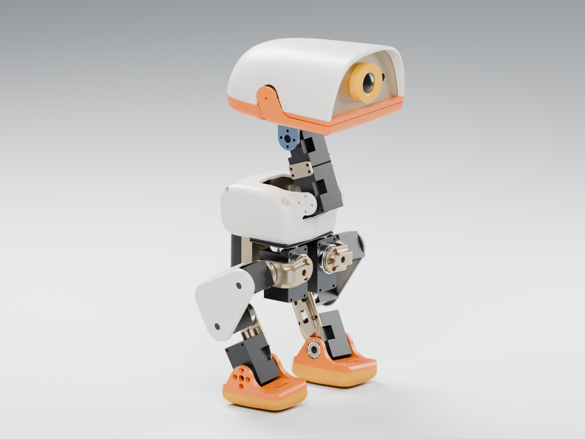

SELF-PACED WORKSHOP
让 Microduck 学会自主射门
从看懂一台双足机器人开始，用仿真、强化学习和视觉感知，把“看到足球”变成一次完整的自主行动。

你将完成什么
最终场景只有一台 Microduck、一个足球和一个球门。机器人需要找到球，判断球门方向，走到合适的出脚位置，踢球，并重新站稳。你会逐步了解每个环节负责什么，以及它们如何交接。
- 1认识机构
- 2控制与训练
- 3视觉与导航
- 4自主射门

学完之后，你能够
- 说明关节、执行器、观测、动作和奖励之间的关系。
- 启动 Newton / Isaac Lab 仿真，加载固定策略并观察机器人行为。
- 运行一次有预算限制的训练练习，找到检查点并解释训练曲线。
- 把相机检测、ToF 距离和身体姿态联系起来，解释自主射门的状态切换。
- 记录完整任务的成功与失败，区分模型指标和任务指标。
课程路线
| 章节 | 要解决的问题 |
|---|---|
| 1 · 认识机器人 | 哪些部件在运动？软件究竟控制什么？ |
| 2 · 第一次仿真 | 如何启动场景，并让固定策略控制关节？ |
| 3 · 学习行走 | 策略怎样从奖励中学习？怎样保存自己的训练？ |
| 4 · 从动作到技能 | 为什么“能动”与“完成动作”是两回事？ |
| 5 · 让机器人看见球 | 图像中的方框怎样变成可用的空间信息？ |
| 6 · 导航与站位 | 看到了球，为什么还不能立即踢？ |
| 7 · 完成自主射门 | 如何连接所有模块，并判断整次任务成功？ |